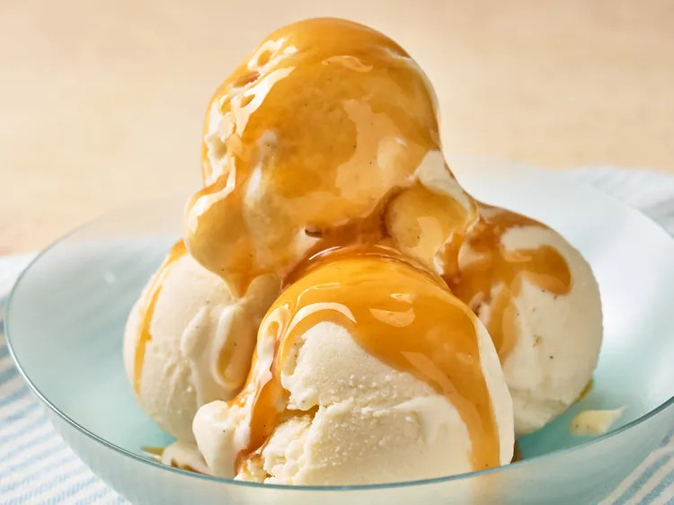

Home
Creamy No-Churn Mayo Ice Cream

Be the first to rate & review!
Description
This creamy no-churn mayo ice cream is unbelievably smooth, rich, and easy to make with
just a handful of ingredients—no ice cream maker required. The mayonnaise adds extra
creaminess and a velvety texture, creating a surprisingly delicious frozen treat that’s
perfectly scoopable straight from the freezer.
Ingredients
- 1 (14 ounce) can sweetened condensed milk
- 1 1/4 cups heavy cream
- 1/3 cup milk
- 1/4 cup mayonnaise
- 1 teaspoon vanilla paste or extract
Steps
Step 1
Combine sweetened condensed milk, heavy cream, milk, mayonnaise, and vanilla paste in the bowl of a stand mixer fitted with the whisk attachment. Whip at medium speed until thickened slightly and frothy.
Step 2
Transfer mixture to a loaf pan and place in the freezer for at least 8 hours .
By Nicole McLaughlin |